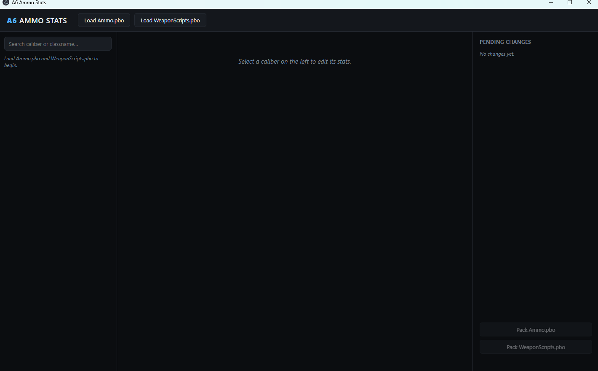
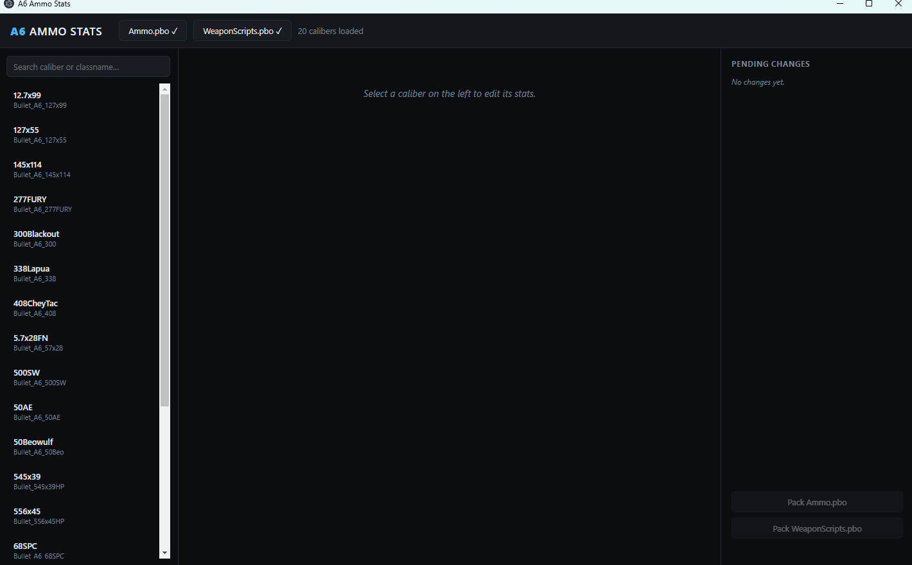
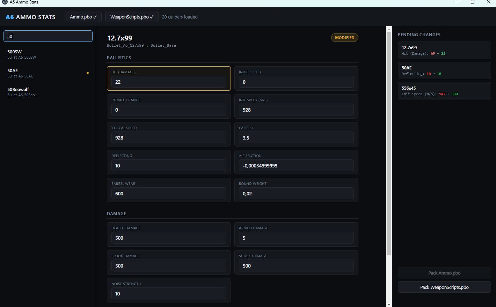
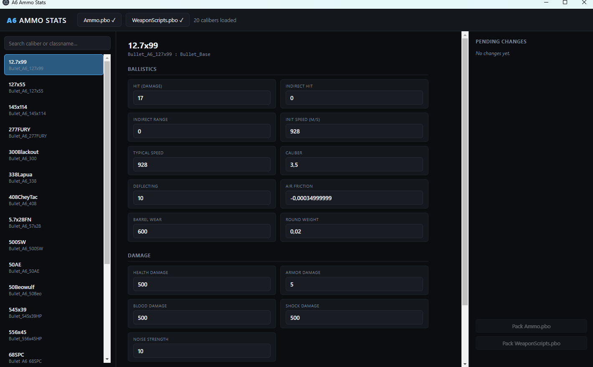
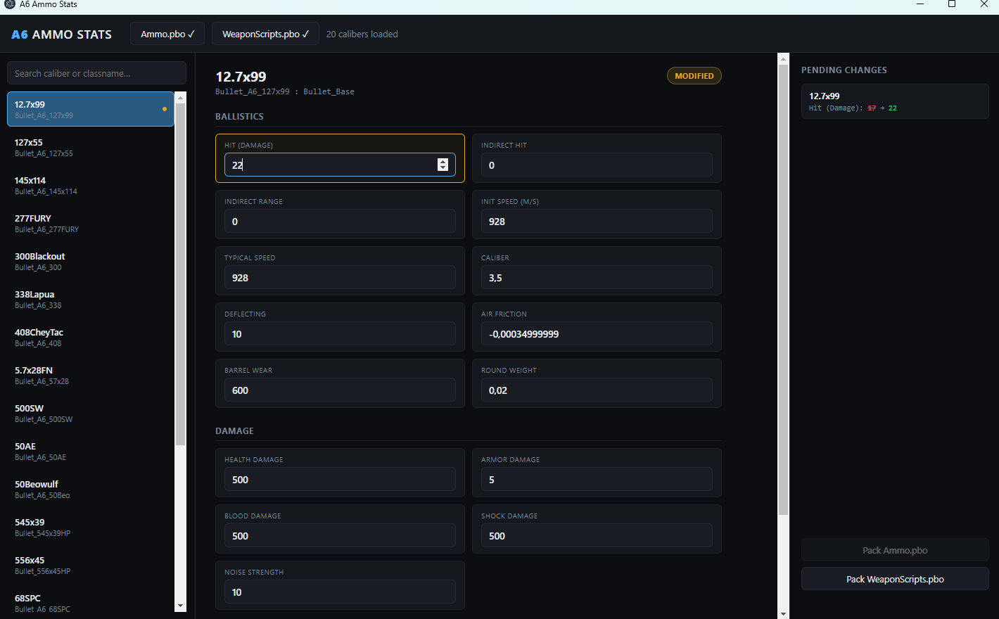
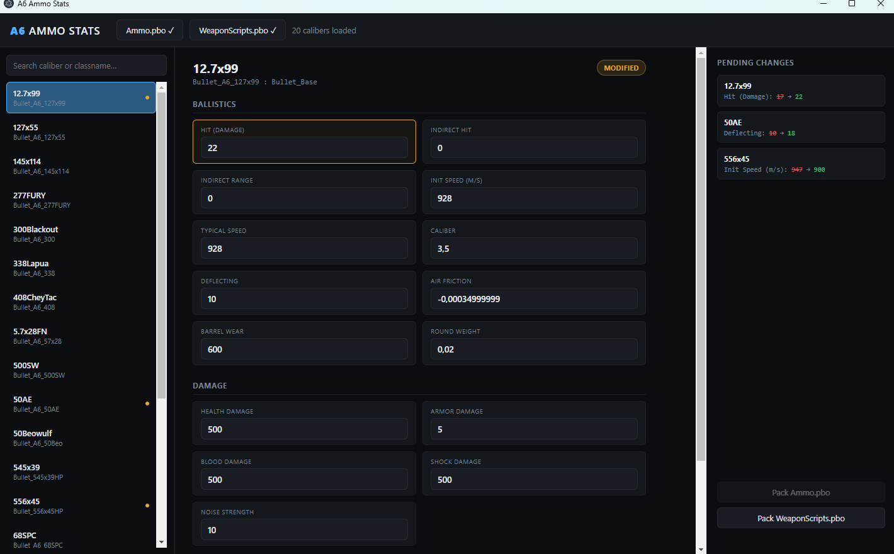

A6 Ammo Stats is a standalone desktop tool for editing the real in-game stats of every A6 ammo caliber — damage, velocity, deflection, noise, and more — without touching a text editor or a hex editor.
You load your own Ammo.pbo and WeaponScripts.pbo, the app reads every real caliber's config out of them (currently 20 real calibers from the base A6 pack), lets you edit any stat through plain number fields, and packs your changes back into a new .pbo you can drop straight onto your server.
cfgAmmo data the DayZ engine itself reads. There is no invented or approximated stat anywhere in this tool.
It does not sign your packed .pbo — you sign it yourself with your own key, the same way you always do. It also does not touch weapon-side stats (recoil, sway, fire rate) — only the ammo/damage side.
A6 Ammo Stats Setup 1.0.0.exe.config.bin — true for the stock A6 Ammo.pbo/WeaponScripts.pbo), converting that to readable text currently needs DayZ Tools installed on the same machine (free, via Steam). This only affects the loading step — packing your edited result back out never needs DayZ Tools. If DayZ Tools isn't found, the app tells you clearly instead of failing silently.
On first launch, the app is empty — nothing to edit until you point it at your files.

Ammo.pbo file.WeaponScripts.pbo file.You don't have to load both at once — loading just one still works, you'll just see fewer calibers (whichever file actually contains the caliber's cfgAmmo data).

The left sidebar lists every caliber the app found, sorted alphabetically. Each row shows the caliber name and its real in-game classname underneath (e.g. Bullet_A6_127x99) — useful for confirming you're editing the exact round you think you are.
Click any row to open it in the editor. Type in the search box at the top of the sidebar to filter by caliber name or classname as you type.

Selecting a caliber opens its full stat sheet. The top group, Ballistics, controls how the round behaves in flight and what it does to hard surfaces.

| Field | What it controls |
|---|---|
| Hit (Damage) | The base direct-hit damage this round deals on a solid hit, before any hit-zone or armor multipliers apply. This is the single biggest lever for "how deadly is this round." |
| Indirect Hit | Splash/area damage dealt to targets near the impact point rather than directly hit. 0 for a normal bullet — only meaningful for explosive-type rounds. |
| Indirect Range | The radius, in meters, that Indirect Hit reaches. Has no effect while Indirect Hit is 0. |
| Init Speed (m/s) | Muzzle velocity — how fast the round leaves the barrel. Higher means flatter trajectory and less drop over distance. |
| Typical Speed | A reference velocity the engine uses for its own ballistic/sound-timing math. On real A6 rounds this normally matches Init Speed exactly. |
| Caliber | An abstracted game value (not the literal mm bore size) that governs how well this round penetrates cover and armor. A 12.7x99 round shows 3.5 here, not 12.7 — don't confuse it with the real-world caliber in the round's name. |
| Deflecting | How prone the round is to ricochet off hard/angled surfaces instead of penetrating. |
| Air Friction | Always a small negative number — controls how quickly the round loses velocity over distance. More negative means faster drop-off at range. |
| Barrel Wear | How much firing this round wears down the weapon's barrel condition per shot. |
| Round Weight | The individual cartridge's weight — feeds into the loaded magazine's total inventory weight. |
The second group, Damage, controls exactly what happens to a player's health when this round hits them.
| Field | What it controls |
|---|---|
| Health Damage | Direct damage applied to the player's overall health pool on a hit. |
| Armor Damage | Damage applied specifically to worn armor/plate durability when the hit lands on an armored zone. |
| Blood Damage | Damage applied to the player's blood level — drives bleeding severity. |
| Shock Damage | Damage applied to the shock system, tied to pain/incapacitation response. |
| Noise Strength | How loud this shot registers to nearby AI and players for detection purposes. |
Below the Damage group, a read-only Magazine panel shows the real loaded-magazine item this round belongs to (its display name, classname, weight, and round count) — for reference only, not editable here.
Click into any field and type a new number. That's it — no save button per field, no confirmation dialog.

The right-hand Pending Changes panel is your running summary of everything you've edited since loading — across every caliber, not just the one currently open. Each entry shows the exact field, its original value, and your new value.

Typing a value back to its original number automatically removes it from this list — there's no separate "undo" needed, just retype the original.
Once you're happy with your edits, use the two buttons at the bottom of the Pending Changes panel:
.pbo.You'll see this if the pbo you loaded has binarized configs and DayZ Tools isn't installed on this machine. Install DayZ Tools via Steam (it's free) and try loading again.
Only calibers with a real cfgAmmo entry show up. A handful of files in the base pack (like VanillaAdaptations) intentionally patch vanilla weapon configs instead of defining a new ammo type, so they contribute no caliber to the list — that's expected, not a bug.
Click directly into the field first (a single click is enough), then type. If a field ever seems to ignore input, closing and reopening the caliber (click it again in the sidebar) resets the view without losing any already-tracked changes.
| Action | How |
|---|---|
| Load a file | Top bar → Load Ammo.pbo / Load WeaponScripts.pbo |
| Find a caliber | Type into the search box above the caliber list |
| Edit a stat | Click the field, type a new number |
| See what's changed | Right panel, "Pending Changes" — every caliber, every field |
| Revert one field | Retype its original value |
| Save your work | Pack Ammo.pbo / Pack WeaponScripts.pbo → choose a save location |
That's the whole workflow — load, browse, edit, review, pack. Everything you see in this app reads and writes the real config data your server actually runs.